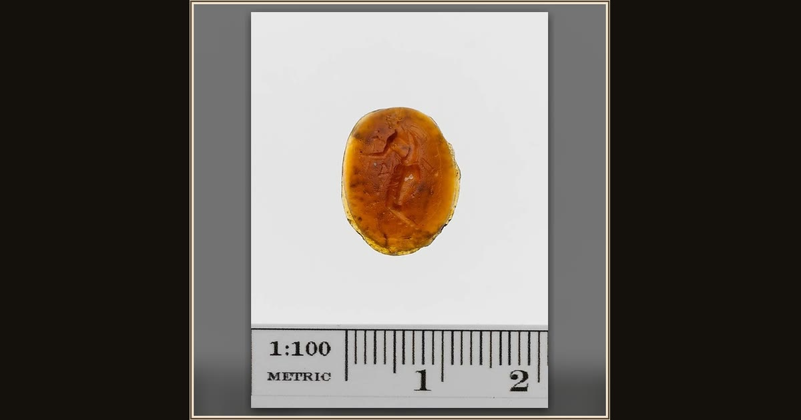

Glass ring stone
Unknown · 3rd–2nd century BCE · The Metropolitan Museum of Art · New York, USA
Carved into a gem no larger than a fingertip, Odysseus journeys on — small enough to wear on a ring and carry his story anywhere.

Unknown · 3rd–2nd century BCE · The Metropolitan Museum of Art · New York, USA
Carved into a gem no larger than a fingertip, Odysseus journeys on — small enough to wear on a ring and carry his story anywhere.